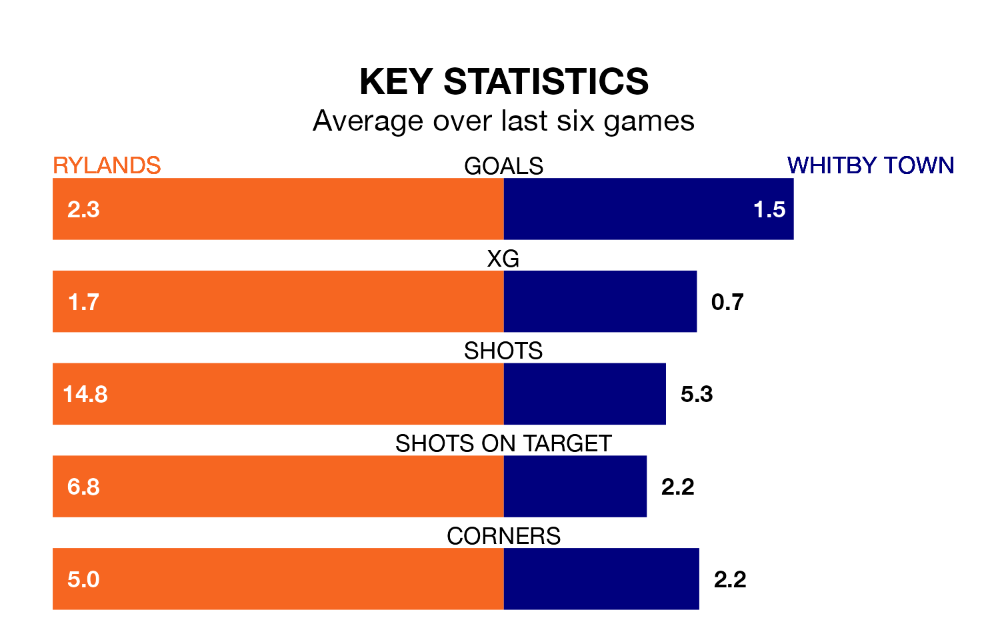

Two of Northern Premier League's meanest defences go head-to-head on Saturday, when Rylands host Whitby Town.
No teams have conceded fewer goals than Rylands to date: the home side have let in just 24 goals in 24 games.
Whitby have conceded 29 goals in 23 games, giving them the joint-third tightest back line so far this season.
Rylands are second in the table after 24 games, of which they have won 12 and drawn nine, earning 45 points.
Whitby are four places behind the home team in sixth, with 12 wins and five draws putting them on 41 points.
Rylands are in mixed form in Northern Premier League, with two wins and three draws from their last six games.
With four wins and a draw over that period, Town's form is better – they have taken 13 points from 18, compared to Rylands's nine.
Over the last two years, Rylands and Whitby have played each other on three occasions. Rylands won two of them and Whitby one.
Their last meeting was on September 9, when Rylands won 3-1 away.
Rylands's last match was on January 6, a 0-0 draw against Ashton United.
Whitby lost 1-0 against Worksop Town last time out, also on January 6.
Updated: 13:38 (UTC), 10/01/24